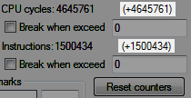
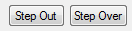

Содержание
Брейкпоинт можно создавать как через Hex Editor, так и через Debugger. Независимо от того, как именно был создан брейкпоинт, после создания он отобразится в общем списке брейкпоинтов.
Создание брейкпоинтов через Hex Editor обычно гораздо быстрее, нежели при ручном создании через Debugger. Возможности создания брейкпоинта через Hex Editor ограничены, но часто и этого вполне достаточно.
Можно создавать Read, Write и Execute брейкпоинты для адресов NES Memory и PPU Memory, кликнув правой кнопкой по адресу (или по предварительно выделенному диапазону адресов).
При создании брейкпоинта по адресам NES Memory $8000-$FFFF, в поле ввода Condition будет автоматически добавлено условие T==# со значением номера банка PRG.
Если после запуска эмулятора окно Debugger'а не было предварительно открыто вручную, а также если в файле .deb имеется некое количество брейкпоинтов, то при добавлении брейкпоинта через Hex Editor он будет помещен в начало списка, а самый нижний брейкпоинт списка файла .deb превратится в брейкпоинт на адрес NES Memory $0000, в котором будут удалены все условия.
Нажав кнопку Add под списком брейкпоинтов, появится окно Add Breakpoint для создания брейкпоинта, в котором ты указываешь необходимые условия.

Обязательное условие. Рядом с Address есть 2 поля для ввода адреса.

Оба поля служат для указания диапазона адресов. В поле слева вводится начальный адрес диапазона, а в поле справа - конец диапазона. Если оставить поле справа пустым, то условие брейкпоинта будет распространяться только на один единственный адрес, указанный в поле слева.

Адрес может быть записан только с использованием цифр и латинскимх букв A-F, другие символы не допускаются. Лишние нули слева указывать в адресе не обязательно.
Диапазон адресов может быть любой величины, вплоть до $0000-$FFFF. Максимальный диапазон зависит от условия на тип памяти.
Если сработало условие брейкпоинта, в котором прописан диапазон адрес, понять какой именно из этих адресов вызвал срабатывание можно будет лишь глядя на команду, на которой остановилось выполнение кода.
Если оставить поле слева пустым, то брейкпоинт удалится при попытке его создать.
Если продублировать адрес поля слева в поле справа, это никак не повлияет на условие брейкпоинта, но он будет отображаться в списке как диапазон адресов.
Диапазон адресов, указанный в обратном порядке, например $000F-$0000, не будет работать, несмотря на то, что такой брейкпоинт добавится в список.
При использовании недопустимого символа, все символы справа от него, включая сам символ, удаляются при попытке создать брейкпоинт. Для пользователей с русской раскладкой клавиатуры часто будет встречаться ситуация, когда, например, при попытке добавить адрес $07C5, введя русскую букву С, в итоге в условии окажется адрес $0007.
Для каждого из трех видов прерываний процессора (Reset, NMI и IRQ) есть сокращенное обозначение, которое можно ввести в поле ввода адреса. Reset = RST, NMI = NMI (или VBL), IRQ = IRQ.
Младшие и старшие байты адресов обработчиков этих прерываний указаны в NES Memory по адресам $FFFA-$FFFF. Но вместо того, чтобы просматривать эти байты и вычислять адрес самостоятельно, достаточно ввести нужное сокращение, и адрес будет автоматически выставлен при сохранении брейкпоинта.
Эти сокращения очень удобно использовать при ручном создании брейкпоинтов с условием Execute.
Сокращения также можно вводить в поле ввода кнопки Seek To и при создании закладок.
Необязательное условие, однако без него брейкпоинт работать не будет. Здесь задается тип (вид) брейкпоинта.
Read - чтение, Write - запись, Execute - выполнение, Forbit - запрет.
Тип брейкпоинта указан во флагах 3-6 в списке брейкпоинтов буквами R, W, X и F соответственно.
Типы брейкпоинта будут описаны в соответствующей статье.
Обязательное условие. В разделе Memory указывается тип памяти.
CPU Mem = NES Memory, PPU Mem = PPU Memory, Sprite Mem = OAM Memory.
Read и Write брейкпоинты на адреса из PPU Memory будут срабатывать на командах, работающих с адресом $2006, поскольку он является регистром видеопроцессора, через который осуществляется чтение и запись байтов в видеопамять.
Для PPU Memory максимальный диапазон адресов $0000-$3FFF, для Sprite Memory - $0000-$00FF.
Превышение диапазона фильтруется через маску. Маска адресов PPU Memory - $3FFF, Sprite Memory - $00FF.
Тип памяти указан вторым флагом в списке брейкпоинтов буквами C, P или S соответственно.

Необязательное условие. В поле ввода Condition можно вводить дополнительные уточняющие условия для срабатывания созданного брейкпоинта.
Если в после Condition записано некое условие, этот факт отображается в списке брейкпоинтов.
Дополнительные условия будут описаны в соответствующей статье.
В поле ввода Name можно дать имя своему брейкпоинту (необязательно). Это не повлияет на его условия.
Имя будет отображаться в списке брейкпоинтов. Помещается всего несколько символов.
Если у переименованного брейкпоинта есть условие в поле Condition, в списке все равно будет отображаться только имя.